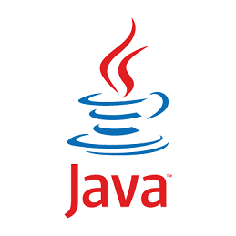

Скорочена довідка
- 1.Історія
Історія

Мова програмування Java зародилася в 1991 р. в лабораторіях компанії Sun Microsystems. Розробку проєкту започаткував Джеймс Ґослінґ, сам проєкт мав назву «Green» (Зелений). Створення першої робочої версії, яка мала назву «Oak» (дуб), зайняло 18 місяців. Оскільки виявилось, що ім'я Oak уже використовувалось іншою фірмою, то в результаті тривалих суперечок навколо назви нової мови з-поміж ряду запропонованих було вибрано назву Java, у 1995 р. мову було офіційно перейменовано.
Головним мотивом створення Java була потреба в мові програмування, яка б не залежала від платформи (тобто від архітектури) і яку можна було б використовувати для створення програмного забезпечення, що вбудовується в різноманітні побутові електронні прилади, такі як мобільні засоби зв'язку, пристрої дистанційного керування тощо.
Досить скоро майже всі найпопулярніші тогочасні вебоглядачі отримали можливість запускати «безпечні» для системи Java-аплети всередині вебсторінок. У грудні 1998 р. Sun Microsystems випустила Java 2 (спершу під назвою J2SE 1.2), де було реалізовано декілька конфігурацій для різних типів платформ. Наприклад, J2EE призначалася для створення корпоративних застосунків, а значно урізана J2ME для приладів з обмеженими ресурсами, таких як мобільні телефони. У 2006 році в маркетингових цілях версії J2 було перейменовано у Java EE, Java ME та Java SE відповідно.
13 листопада 2006 року Sun випустили більшу частину Java як вільне та відкрите програмне забезпечення згідно з умовами GNU General Public License (GPL). 8 травня 2007 корпорація закінчила процес, в результаті якого всі початкові коди Java були випущенні під GPL, за винятком невеликої частини коду, на який Sun не мала авторського права.
Період становлення Java збігся у часі з розквітом міжнародної інформаційної служби World Wide Web. Ця обставина відіграла вирішальну роль у майбутньому Java, оскільки Web теж вимагала платформо-незалежних програм. Як наслідок, були зміщені акценти в розробці Sun з побутової електроніки на програмування для Інтернет.